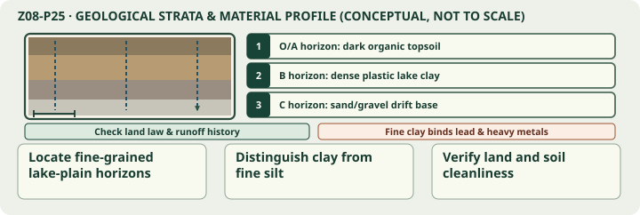

Z08-P25 · Rocks, minerals and materials · New manuscript
Glacial Lake and Alluvial Clay Deposits in the Upper Midwest
Recognize regional clay-bearing glacial lake plains and stream-cut clay horizons while respecting land, bank-safety, and contamination limits.
When it applies · Glacial Lake Agassiz, Lake Duluth, and river floodplain soils across Minnesota.
Equipment · Surficial geologic map, trowel only on lawful private/authorized sites, gloves.

Actions
- Expect fine-grained clay deposits primarily in former glacial lake basins and slow-water river floodplains rather than coarse upland sand ridges.[R02, R17]
- Check land ownership and collecting bans before digging any soil or clay because parks, SNAs, and public shorelines prohibit excavation.[R08, R09, R10]
- Screen site history for roadways, old farm dumps, mining tailings, and industrial runoff before touching fine sediments that bind heavy metals.[R12]
Failure recognition · Digging clay from protected stream banks or urban/industrial floodplains causes erosion violations and lead or chemical exposure.[R09, R12]
Verify · Land permission, bank stability, and contamination screening precede any soil texture observation.[R08, R12, R17]
Stop or change course · Stop digging immediately near unstable riverbanks, protected parks, roadways, or historically painted or industrial sites.[R09, R12, R16]
Evidence and editorial notes
- R02 · Minnesota DNR · Minnesota Geology and Glacial History Overview (Current web edition)
- Section: Glacial drift and landscape materials · Conditions: Glacial till, moraines, outwash, and lake-plain deposits
Support: Glacial transport mixes erratics and cobbles from distant source formations across Minnesota soils and stream beds.
Limitations: Cobble location does not prove local bedrock origin or uniform internal stone integrity. · Conflicting evidence: None noted.
Editorial note: Separates erratic cobbles from bedrock strata. · Specialist reviewer: Quaternary geologist
Primary source · checked 2026-11-25 - R08 · National Park Service / eCFR · 36 CFR 2.1 Preservation of Natural, Cultural and Archeological Resources (Current CFR)
- Section: 36 CFR 2.1 natural resource collecting prohibitions · Conditions: National Parks, Monuments, and federal recreation areas
Support: Collecting rocks, minerals, fossils, wood, or natural specimens is prohibited on National Park System lands unless specifically authorized.
Limitations: Rules vary across USFS, BLM, state, tribal, county, and private lands; check the governing land manager before taking any sample. · Conflicting evidence: None noted.
Editorial note: Prevents unlawful federal resource extraction. · Specialist reviewer: Public-lands resource manager
Primary source · checked 2026-11-25 - R09 · Minnesota DNR · Minnesota State Park Rules and Resource Collecting Restrictions (Current web edition)
- Section: State park natural-feature protection · Conditions: Minnesota State Parks and Recreation Areas
Support: Removing rocks, minerals, soil, or live vegetation from Minnesota State Parks is prohibited to protect natural resources.
Limitations: Verify jurisdiction boundaries before picking up specimens even along shorelines or trails. · Conflicting evidence: None noted.
Editorial note: Bounds state-park material collection. · Specialist reviewer: Minnesota DNR resource manager
Primary source · checked 2026-11-25 - R10 · Minnesota DNR · Scientific and Natural Areas Visitor Rules and Prohibitions (Current web edition)
- Section: No collecting plants, animals, rocks or fossils; Foraging · Conditions: Minnesota Scientific and Natural Areas, subject to the actual site rules
Support: Leave natural features in place unless the site lists an applicable exception or there is a valid authorization.
Limitations: Certain named sites have limited berry or mushroom exceptions. They do not extend to rocks or general digging. · Conflicting evidence: Conditions are recorded in the A03 audit.
Editorial note: Enforces SNA zero-collection boundaries. · Specialist reviewer: Minnesota DNR SNA manager
Primary source · checked 2026-11-25 - R12 · U.S. EPA · Protect Your Family from Lead in Soil and Dust (2025)
- Section: Soil contamination and urban/industrial lead hazards · Conditions: Soils near historic structures, roadways, mines, or industrial sites
Support: Soils and clays near older painted structures, smelters, tailings, or roadways may harbor lead or industrial contaminants.
Limitations: Visual texture or color cannot detect lead, arsenic, or chemical contaminants; do not use unverified soil/clay for cookware or food contact. · Conflicting evidence: None noted.
Editorial note: Separates clay plasticity checks from chemical safety. · Specialist reviewer: Environmental health and soil scientist
Primary source · checked 2026-11-25 - R16 · Minnesota DNR · Rocks and Minerals of Minnesota Educational Guide (Current web edition)
- Section: Sedimentary limestone, sandstone, and shale permeability · Conditions: Southeastern Minnesota karst, bluff, and river-valley sedimentary strata
Support: Sandstone, limestone, and shale differ sharply in cementation, porosity, and fissility, governing weathering and cliff instability.
Limitations: Karst bluffs and fractured shales shed rockfall unpredictably; visual inspection cannot certify slope or load stability. · Conflicting evidence: None noted.
Editorial note: Covers Upper Midwest sedimentary rock hazards. · Specialist reviewer: Engineering geologist
Primary source · checked 2026-11-25 - R17 · Minnesota Geological Survey (UMN) · Minnesota Geological Survey Maps and Regional Geology (Current web edition)
- Section: Minnesota geological mapping and educational materials · Conditions: Unverified clay or soil
Support: Texture and workability observations are screening cues. Unknown material does not qualify for food contact or heated service.
Limitations: A soil map or field texture cannot verify lead leaching, firing behavior or sanitation. · Conflicting evidence: Conditions are recorded in the A03 audit.
Editorial note: Bounds Z08 clay identification vs cookware claims. · Specialist reviewer: Soil scientist and ceramic/materials specialist
Primary source · checked 2026-11-25
Source lineage · New manuscript (Z08 P16 clay and soil) · Classification · New manuscript.